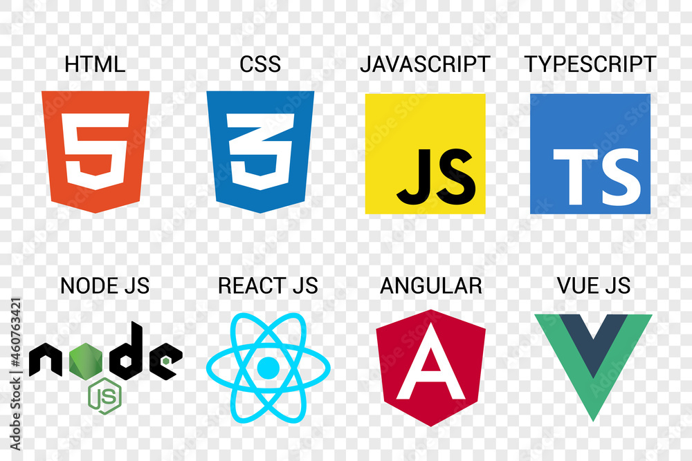

Turning Dreams into Code!
Turning dreams into code is the process of bringing ideas to life through programming. What starts as a vision can become an app, a website, or a technological solution that impacts the world. With programming, you have the power to shape your ideas, automate tasks, and create innovative tools.
The journey begins with small steps, learning the language of computers, but gradually opens the door to achieving grand projects. In this way, programming becomes a bridge between imagination and reality, where your dreams can be transformed into something tangible.

Sobre
Olá, chamo-me Jonathan Guimarães e nasci em 1992, na cidade de Uberaba, Minas Gerais, no Brasil. Ao longo da minha carreira, trabalhei em diferentes áreas, desde a indústria até à condução de veículos pesados. Aos 27 anos, mudei-me para Portugal, onde trabalhei durante cinco anos na construção civil. Atualmente, estou a estudar na área de tecnologia, no curso de Programação, Análise e Desenvolvimento de Sistemas. O meu principal objetivo é melhorar continuamente os meus conhecimentos, de forma a estar preparado para responder às exigências de um mercado competitivo e em constante crescimento. Acredito que, com dedicação e esforço, é possível acompanhar as mudanças e evoluções tecnológicas, o que me permitirá oferecer um contributo valioso nas áreas em que atuo. Estou focado em crescer profissionalmente e em desenvolver as competências necessárias para enfrentar os desafios que surgirem ao longo da minha carreira.
Habilidades Técnicas
Principais Competêncas
Projetos
Formação Acadêmica